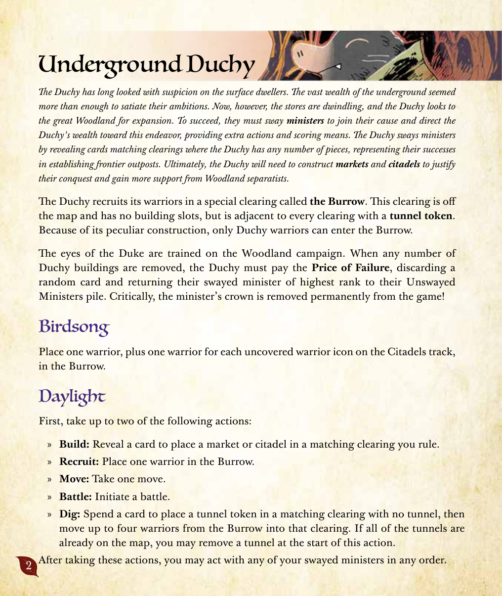
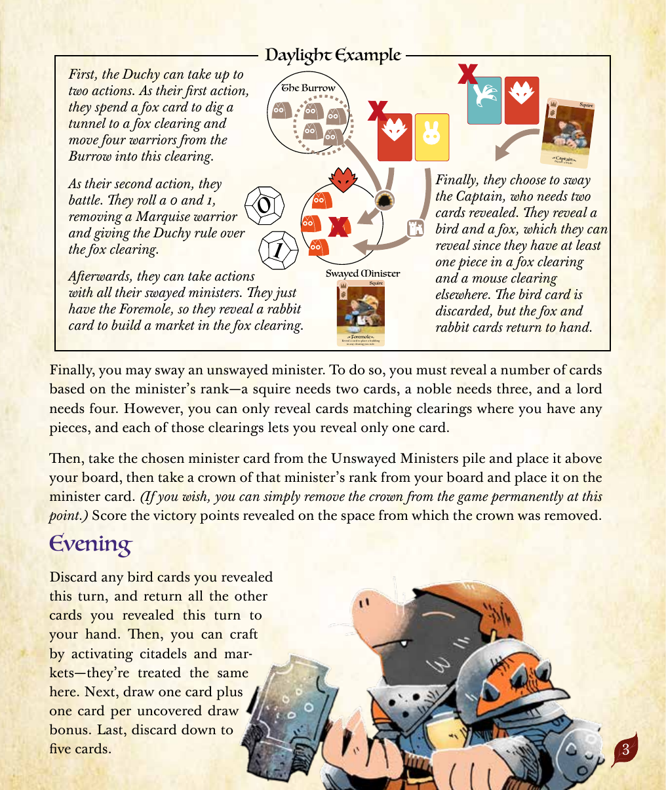
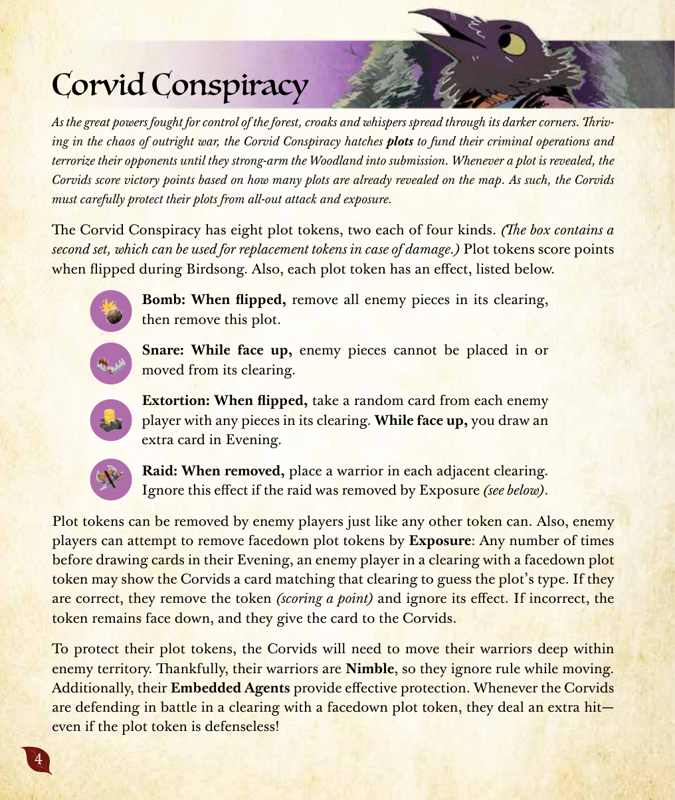
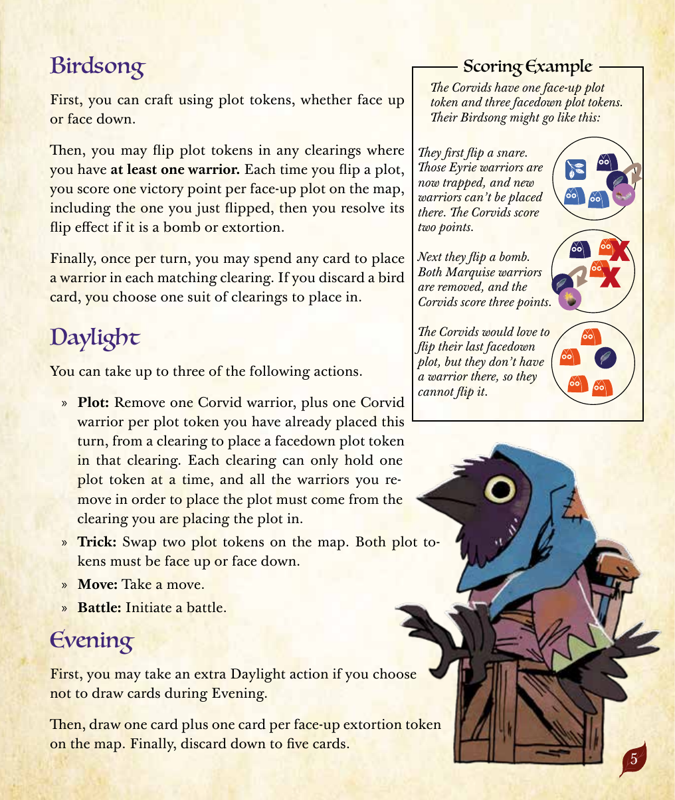
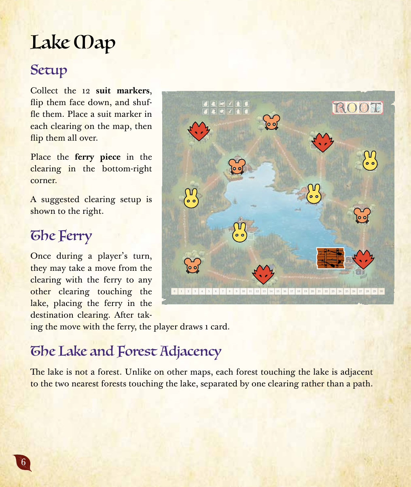
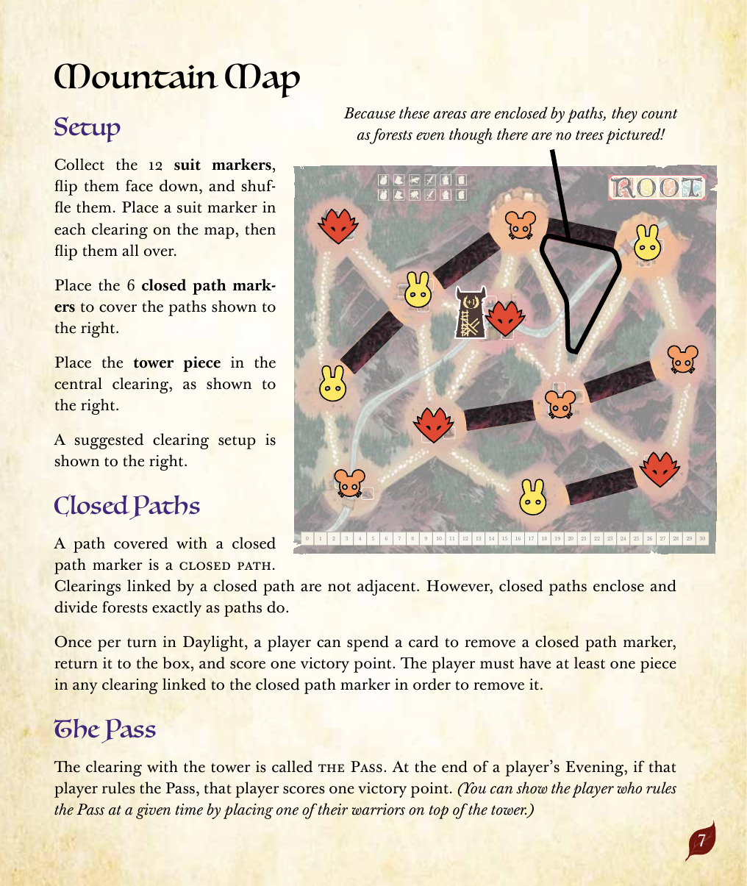
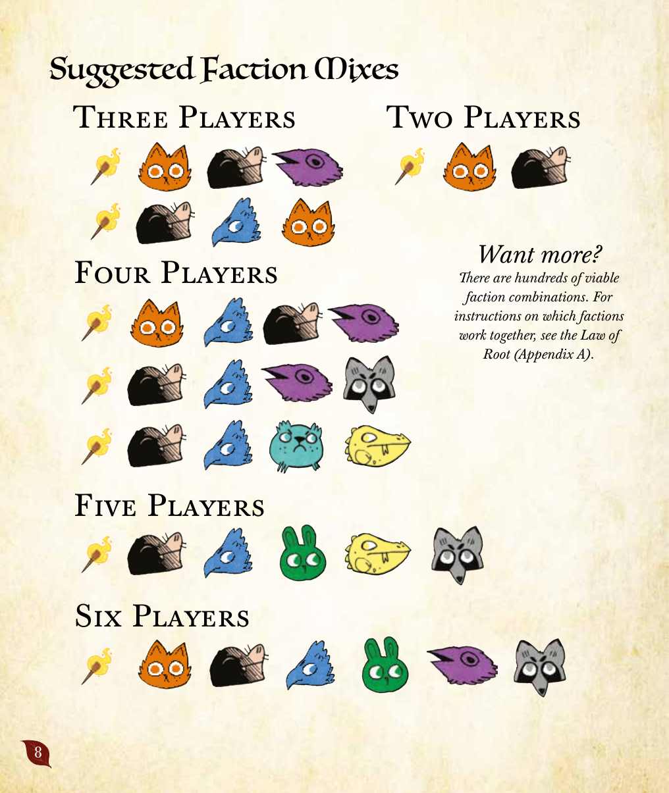

原題: Root: The Underworld Expansion — Learning to Play／会話調の解説と図解例を中心とした入門ガイド。厳密なルール文言は山の拡張（法典編）を参照。
地底の住民たちは、長らく地上の住民を疑いの目で見てきた。地底に眠る莫大な財も、いまや彼らの野心を満たすには十分ではなくなっている。そこで公領は、地底を出て偉大な森への進出を企てる。目的を遂げるため、公領は大臣たちを説得して自分たちの陣営に引き入れ、追加アクションや得点手段を与えてもらわなければならない。公領は、自分の駒がある開拓地に一致するカードを公開することで大臣を説得する。最終的に、公領は市場と城塞を築き上げ、森の分離主義者たちからの支持を勝ち取って征服を正当化する必要がある。
公領は、地図の外にある特殊な開拓地――巣穴――で兵士を徴募する。この開拓地は建物枠を持たないが、トンネルトークンのある開拓地すべてに隣接しているとみなされる。この特殊な構造のため、公領の兵士だけが巣穴に出入りできる。
公爵の目は常に森の戦況に向けられている。公領の建物が何個であれ除去されてしまうと、公領は「失敗の代償」を支払わなければならない――ランダムなカードを1枚捨て、説得済みの大臣のうち最も高い階級の者を「未説得の大臣」の山へ戻す。重要なのは、このとき大臣の冠はゲームから永久に除去される、という点である。
巣穴に兵士を1体、さらに城塞トラックで明らかになっている兵士アイコン1つにつき兵士を1体ずつ置く。
昼光フェイズには、最大2回までのアクションをまず行い、続いて説得済みの大臣のアクションを行い、最後に大臣の説得を試みる。
最後に、まだ説得していない大臣を1人説得してよい。これを行うには、その大臣の階級に応じた枚数のカードを公開する必要がある――騎士なら2枚、貴族なら3枚、侯爵なら4枚。ただし、公開できるのは自分が駒を持つ開拓地に一致するカードに限られ、そうした開拓地1つにつき1枚しか公開できない。
条件を満たしたら、「未説得の大臣」の山からその大臣カードを取って自分のボードの上に置き、自分のボードからその階級に対応する冠を1個取って大臣カードの上に置く。（望むなら、この時点で冠をゲームから永久に除去してもよい。）冠が取り除かれて露出した枠に記載されている勝利点を得る。
まず、このターンに公開した鳥カードはすべて捨て、それ以外の公開したカードはすべて手札に戻す。次に、城塞と市場を発動してクラフトしてよい――この目的において城塞と市場は同一のものとして扱われる。最後に、カードを1枚引き、さらに公開されている引き札ボーナス1つにつきカードを1枚追加で引く。その後、手札が5枚を超えていれば5枚まで捨てる。


偉大な森の覇権をめぐる戦いが激しさを増すにつれ、森の暗がりではきしむような声と密やかな囁きが広がっていく。あからさまな戦争という混沌の中で力を伸ばす黒烏結社は、犯罪行為の資金源とするために陰謀を企てる。やがて陰謀が露見すると、それを使って森を恫喝し、屈服させる。陰謀トークンが表向きにされるたびに、地図上に既に公開されている陰謀の数に応じて黒烏は勝利点を得る。そのため黒烏結社は、自分たちの陰謀を全面的な攻撃や露見から慎重に守らなければならない。
黒烏結社は4種類×2個、合計8個の陰謀トークンを持つ。（箱の中にはさらに同じ8個のスペアが入っており、損傷時の代替品として使える。）陰謀トークンは表向きにされたとき得点となり、さらに種類ごとに固有の効果がある。
陰謀トークンを取り除く方法は、敵プレイヤーが他のトークンと同様に普通に除去する以外にもある。それが「露見」である。あるプレイヤーがその開拓地に一致するカードを見せて、その伏せられた陰謀トークンの種類を言い当てようとするのだ。正解すれば、そのプレイヤーはトークンを取り除いて勝利点を得る。不正解であれば、トークンは伏せられたままとなり、見せたカードは黒烏結社に渡されてしまう。
まず、表向き・裏向きを問わず陰謀トークンを発動してクラフトできる。次に、自分の兵士がいる開拓地の陰謀トークンを、好きな回数だけ表向きにできる。表向きにするたびに、地図上の表向きの陰謀トークン1つにつき（いま表向きにしたものを含めて）勝利点を1点得て、それが爆弾または強要であればその効果を解決する。最後に、1ターンに1回だけ、カードを1枚消費してそれに一致するすべての開拓地に兵士を1体ずつ配置できる――鳥カードを使う場合は、配置するスートを1つ選ぶ。
以下のアクションを最大3回まで、任意の順序・組み合わせで行える。
まず、夕闇フェイズにカードを引かないことを選んだ場合、昼光フェイズに記載されたアクションを1回追加で行える。次に、カードを1枚引き、さらに地図上の表向きの強要トークン1つにつきカードを1枚追加で引く。最後に、手札が5枚を超えていれば5枚まで捨てる。



山の拡張には2枚の新しいマップ――湖マップと山マップ――が含まれている。どちらも他のマップと同じく準備時に12個のスートマーカーを使うが、それぞれに固有のコンポーネントとルールが加わる。
12個のスートマーカーを集めて裏向きにしてシャッフルし、地図上の各開拓地に1つずつ置いて、その後すべて表に返す。渡し船駒は、右下隅の開拓地に置く。推奨される開拓地の配置は原書の図を参照。
あるプレイヤーのターン中に1回、渡し船のある開拓地から、湖に接する他の開拓地へ移動を1回行ってよい。このとき渡し船を移動先の開拓地に置く。渡し船で移動を行った後、そのプレイヤーはカードを1枚引く。
湖は樹林ではない。他のマップとは異なり、湖に接する各樹林は、湖を挟んで最も近い2つの樹林と、（道ではなく）1つの開拓地によって隔てられる形で隣接する。
12個のスートマーカーを集めて裏向きにしてシャッフルし、地図上の各開拓地に1つずつ置いて、その後すべて表に返す。図の右側に示された6本の道に閉鎖道マーカーを6個置く。塔駒は中央の開拓地に置く。推奨される開拓地の配置は原書の図を参照。
閉鎖道マーカーで覆われた道は閉鎖道である。閉鎖道で結ばれた開拓地どうしは隣接しているとみなされない。ただし、閉鎖道は通常の道と同じように樹林を囲み、分断する。
昼光フェイズに1ターン1回、あるプレイヤーはカードを1枚消費して閉鎖道マーカーを1個取り除き、箱に戻して勝利点を1点得ることができる。これを行うには、その閉鎖道マーカーで結ばれた開拓地のいずれかに自分の駒を持っていなければならない。
塔駒のある開拓地を「峠」と呼ぶ。あるプレイヤーの夕闇フェイズの終了時、そのプレイヤーが峠を支配していれば、そのプレイヤーは勝利点を1点得る。（誰が峠を支配しているかを示したい場合は、塔駒の上に自分の兵士を1体置いておくとよい。）

原書では、プレイ人数（2人・3人・4人・5人・6人）別に推奨される派閥構成が図解で示されている。詳細な組み合わせは原書ページの図版を参照のこと。基本的な考え方は、本拡張の2派閥（地底公領・黒烏結社）を、基本ゲームおよび他拡張の派閥と組み合わせ、適切なリーチの合計を満たすようにする、というものである。さらに多くの組み合わせを試したい場合は、『根の法典』付録Aの指示に従うとよい。
